# install a few non-standard dependencies (for colab)Note: you may need to restart the kernel to use updated packages.NOTE: to view this notebook properly, open it via NBViewer or Colab. GitHub won’t show you everything.
We stick an autoencoder in the middle of some “given” encoder(-decoder) system, and we’ll try to get our new system to preserve linearity with respect to the (original) inputs.
Basic Idea: Inputs \(x\) -> Given Model encodings \(y\) -> AA embeddings \(z\)
Flowchart: 
We want this new “audio algebra” map \(h\) to have two properties, which we’ll write as loss functions: 1. “Mix Loss”: Our similarity condition will be to make it so “the embedding of the mix equals the sum of the embeddings”, that is to say \[ h(f(x_1 + x_2)) = h(f(x_1) + h(f(x_2) \] i.e. \[ "zmix = zsum" \] So the mix loss will be
mix_loss = MSE( zmix - zsum ).
aa_recon_loss = MSE ( ymix - y_recon ) + MSE( y_i - y_i_recon ),
where the “recon” variables are in terms of \(h^{-1}\) applied to the z’s, e.g. ymix_recon := \(h^{-1}\)(zmix) ).
…the challenge is that the “mix loss” leads to “collapse”: all the points either constrict to the origin, or towards some constant vector. We’ll use the VICReg method to fix these problems. More on VICReg further below.
Instead of real audio, in order to keep things simple and visualize-able, we’ll just work in terms of 2D data points. The real problem we want so solve eventually involves huge numbers of dimensions that we can’t visualize. The hope is to check our work and understanding and gain intuition using this simple “toy model”.
# install a few non-standard dependencies (for colab)Note: you may need to restart the kernel to use updated packages.Get/set a few “environment” related variables
device = get_device()
print("device = ",device)
SCRATCH_DIR = "/scratch" if os.path.isdir('/scratch') else "/tmp"
SCRATCH_DIR += '/aa' # give audio alg scratch its own spot
if not os.path.exists(SCRATCH_DIR):
os.makedirs(SCRATCH_DIR)
print("SCRATCH_DIR =",SCRATCH_DIR)device = cuda
SCRATCH_DIR = /tmp/aa# generate a unique 2-character code for the run
suffix_len = 2
RUN_SUFFIX = '_'+''.join(random.choices(string.ascii_lowercase, k=suffix_len))
print("RUN_SUFFIX =",RUN_SUFFIX)RUN_SUFFIX = _aoFor starters, just a bunch of random numbers
seed = 5
torch.manual_seed(seed)
batch_size = 1024
n_train_points, train_val_split = batch_size*2000, 0.8 # we're going to grab random data anyway
n_points = int(n_train_points*1.25)
in_dims = 2 # number of dimensions the input data will live in, e.g. 2 or 3
emb_dims = 2 # number of dimensions for embeddings
train_val_split = 0.8
train_len, val_len = round(n_points*train_val_split), round(n_points*(1-train_val_split))
class RandVecDataset(torchdata.Dataset):
"very simple dataset"
def __init__(self, length, dims):
super().__init__()
self.data = 2*torch.rand(length, dims) - 1
def __getitem__(self, idx):
return self.data[idx]
def __len__(self):
return self.data.shape[0]
train_dataset = RandVecDataset(train_len, in_dims)
val_dataset = RandVecDataset(val_len, in_dims)
v = train_dataset.__getitem__(0)
print(train_dataset.__len__(), v.shape)
print(val_dataset.__len__(), v.shape)2048000 torch.Size([2])
512000 torch.Size([2])train_dl = torchdata.DataLoader(train_dataset, batch_size=batch_size, shuffle=True)
val_dl = torchdata.DataLoader(val_dataset, batch_size=batch_size, shuffle=False)
val_iter = iter(val_dl)DEMO BATCH: Vizualization demo batch (same each time)
# plot what the demo batch looks like in input space -- you're going to be seeing this alot!
fig, ax = plt.subplots(1,3, figsize=(12,4))
demo_batch = get_demo_batch(val_iter, debug=True)
ax[0].plot(demo_batch[:,0], demo_batch[:,1], marker='.', linestyle='None')
ax[0].set_title('single "lines+dots" stem')
print("")
demo_mix = demo_batch + get_demo_batch(val_iter, demo_line=True, debug=True) # add another 'line stem'
ax[1].plot(demo_mix[:,0], demo_mix[:,1], marker='.', linestyle='None')
ax[1].set_title('mix of two "lines+dots" stems')
demo_mix = demo_batch + get_demo_batch(val_iter, demo_line=False, debug=True) # random noise will swamp lines
ax[2].plot(demo_mix[:,0], demo_mix[:,1], marker='.', linestyle='None')
ax[2].set_title('mix of "lines+dots" + unit noise')Text(0.5, 1.0, 'mix of "lines+dots" + unit noise')…so in general our mix of random numbers – even if one of the stems has a nice pattern – will just be a bunch of random numbers.
We’ll use the far right for “demo_mix” since that’s what it’ll typically look like, whereas the middle graph is contrived.
# test that
emb_test = EmbedBlock(2, 2, use_bn=True, requires_grad=False)
#res_test = ResBlock(2, 2)This is a stand-in for whatever the main encoder is to be, i.e. for which the audio-algebra is going be inserted in the middle of.
This could be an actual audio encoder or,…just something random.
Now, for word embeddings these are typically just weights from a linear transformation, but we’re going to assume that there’s maybe some set of nonlinear tranformations that led us to this point. I made up a twisty nonlinear model for the toy model to use.
Oh, first I’m going to define a couple nonlinearities that might be used in the model.
…and we’ll just quickly visualize them.
x = torch.linspace(-2.5,2.5,500)
fig, ax = plt.subplots(figsize=(9,4))
ax.plot(x.cpu().numpy(), torch.tanh(3*x).cpu().numpy(), label='tanh')
ax.plot(x.cpu().numpy(), friendly_tanh(x,a=3).cpu().numpy(), label='friendly_tanh')
ax.plot(x.cpu().numpy(), compressor(x).cpu().numpy(), label='"compressor"')
ax.legend()<matplotlib.legend.Legend>
given_model.encode on Inputstorch.manual_seed(seed)
#given_model = SimpleAutoEncoder(in_dims=in_dims, emb_dims=emb_dims).to(device)
given_model = TwistAndScrunch()
given_model = given_model.to(device)print("for single stem:")
viz_given_batch(demo_batch, given_model, debug=True)for single stem:
absmax of val_batch = 0.9996815919876099
absmax of emb_batch = 1.141883134841919print("Also operate on the demo mix:")
viz_given_batch(demo_mix, given_model, debug=True)Also operate on the demo mix:
absmax of val_batch = 1.9301079511642456
absmax of emb_batch = 1.2925496101379395this is the model that we want to train
really this is more of a dataloader utility but for now its being called from the main loop because it involves less change to the dataloader. ;-)
Code to to do the encoding of stems and faders into zmix and zsum
def do_mixing(stems, faders, given_model, aa_model, device, debug=False, **kwargs):
"""
here we actually encode inputs.
0's denote values in the given model space, non-0's denode those in our aa_model
e.g., "y" denotes an embedding from the frozen encoder, "z" denotes re-mapped embeddings
"""
zs, ys, zsum, ysum, yrecon_sum, fadedstems = [], [], None, None, None, []
mix = torch.zeros_like(stems[0]).to(device)
#if debug: print("do_mixing: stems, faders =",stems, faders)
for s, f in zip(stems, faders): # iterate through list of stems, encode a bunch of stems at different fader settings
fadedstem = (s * f).to(device) # audio stem adjusted by gain fader f
with torch.no_grad():
y = given_model.encode(fadedstem) # encode the stem
z, y_recon = aa_model(y) # <-- this is the main work of the model
zsum = z if zsum is None else zsum + z # <---- compute the sum of all the z's so far. we'll end up using this in our (metric) loss as "pred"
mix += fadedstem # make full mix in input space
with torch.no_grad():
ymix = given_model.encode(mix) # encode the mix in the given model
zmix, ymix_recon = aa_model(ymix) # <----- map that according to our learned re-embedding. this will be the "target" in the metric loss
# for diagnostics:
ysum = y if ysum is None else ysum + y # = sum of embeddings in original model space; we don't really care about ysum except for diagnostics
yrecon_sum = y_recon if yrecon_sum is None else yrecon_sum + y_recon # = sum of embeddings in original model space; we don't really care about ysum except for diagnostics
zs.append(z) # save a list of individual z's
ys.append(y) # save a list of individual y's
fadedstems.append(fadedstem) # safe a list of each thing that went into the mix
archive = {'zs':zs, 'mix':mix, 'znegsum':None, 'ys': ys, 'ysum':ysum, 'ymix':ymix, 'ymix_recon':ymix_recon, 'yrecon_sum':yrecon_sum, 'fadedstems':fadedstems} # more info for diagnostics
return zsum, zmix, archive # we will try to get these two to be close to each other via loss. archive is for diagnosticsaa_use_bn = False # batch norm?
aa_use_resid = True # use residual connections? (doesn't make much difference tbh)
hidden_dims = 64 # number of hidden dimensions in aa model. usually was 64
torch.manual_seed(seed) # chose this value because it shows of nice nonlinearity
aa_model = AudioAlgebra(dims=emb_dims, hidden_dims=hidden_dims, use_bn=aa_use_bn, resid=aa_use_resid).to(device)…and visualize its effects
# test the viz
torch.manual_seed(seed)
demo_stems, demo_faders, val_iter = get_stems_faders(demo_batch, val_iter, val_dataset, debug=True, unity_gain=False, maxstems=2)
print("demo_faders = ",demo_faders)
print("calling do_mixing...")
demo_zsum, demo_zmix, demo_archive = do_mixing(demo_stems, demo_faders, given_model, aa_model, device, debug=True)
print("calling viz_aa_batch...")
im = viz_aa_demo(demo_zsum, demo_zmix, demo_archive, aa_model, debug=False)
immaxstems, nstems = 2 2
next_stem.shape = torch.Size([1024, 2])
demo_faders = tensor([ 1.4630, -0.5718])
calling do_mixing...
calling viz_aa_batch...The fact that zsum and zmix (bottom right) are not the same is the problem that our aa-mixer model will try to put right.
Define some losses
mseloss = nn.MSELoss()
def rel_loss(y_pred: torch.Tensor, y: torch.Tensor, eps=1e-3) -> float:
"relative error loss --- note we're never going to actually use this. it was just part of development"
e = torch.abs(y.view_as(y_pred) - y_pred) / ( torch.abs(y.view_as(y_pred)) + eps )
return torch.median(e)We could try to train the model now, but the representations would collapse, either toward the origin or toward a line.
Avoiding collapse has been some of the primary outputs of the Meta AI (Yann LeCun et al)’s work on Self-Supervised Learning (SSL) of representations. Mostly they’re interested in classification of images, but we will try to adapt this to our purposes. A few notable papers, in chronological and topical order:
The VICReg paper’s architecture diagram and figure caption is as follows:  > “Figure 1: VICReg: joint embedding architecture with variance, invariance and covariance regularization. Given a batch of images \(I\), two batches of different views \(X\) and \(X'\) are produced and are then encoded into representations \(Y\) and \(Y'\). The representations are fed to an expander producing the embeddings \(Z\) and \(Z'\). The distance between two embeddings from the same image is minimized, the variance of each embedding variable over a batch is maintained above a threshold, and the covariance between pairs of embedding variables over a batch are attracted to zero, decorrelating the variables from each other. Although the two branches do not require identical architectures nor share weights, in most of our experiments, they are Siamese with shared weights: the encoders are ResNet-50 backbones with output dimension 2048. The expanders have 3 fully-connected layers of size 8192.” – Bardes et al
> “Figure 1: VICReg: joint embedding architecture with variance, invariance and covariance regularization. Given a batch of images \(I\), two batches of different views \(X\) and \(X'\) are produced and are then encoded into representations \(Y\) and \(Y'\). The representations are fed to an expander producing the embeddings \(Z\) and \(Z'\). The distance between two embeddings from the same image is minimized, the variance of each embedding variable over a batch is maintained above a threshold, and the covariance between pairs of embedding variables over a batch are attracted to zero, decorrelating the variables from each other. Although the two branches do not require identical architectures nor share weights, in most of our experiments, they are Siamese with shared weights: the encoders are ResNet-50 backbones with output dimension 2048. The expanders have 3 fully-connected layers of size 8192.” – Bardes et al
…Note that we’re going to be using this scheme a little differently than the original authors intended:
Instead of sending augments of crops of image down the lower “path” of the above diagram, we’re going to send the mix to get \(zmix\)! And along the top path, we’re going to send multiple stems independently \(x_i \mapsto z_i\), and then sum these up to get \(zsum := \sum_i z_i\) before comparing that against \(z_{mix}\). So our similarity function will have the form \(s( zmix, zsum )\) instead of \(s(Z, Z')\) shown in the digram above.
Our diagram looks like this:
…and the “augmentation” or “views” will take the form of us just grabbing random pairs of stems over & over.
As explained in the “VICReg: Intuition” section of the paper:
“The basic idea is to use a loss function with three terms: 1. Invariance: the mean square distance between the embedding vectors. 2. Variance: a hinge loss to maintain the standard deviation (over a batch) of each variable of the embedding above a given threshold. This term forces the embedding vectors of samples within a batch to be different. 3. Covariance: a term that attracts the covariances (over a batch) between every pair of (centered) embedding variables towards zero. This term decorrelates the variables of each embedding and prevents an informational collapse in which the variables would vary together or be highly correlated.”
The invariance part is easy. But that’s what leads to collapse.
The variance part is about using a hinge loss on some scale \(\gamma\) (“fixed to \(1\) in our experiments”) minus the standard deviation \(S\) across each dimension \(j\) (for \(d\) dimensions) within the batch \(Z\):
\[ v(Z) = \frac{1}{d} \sum_{j=1}^{d} \max(0, \gamma - S(z^{j}, \epsilon)) \] where \(z^j\) denotes “the vector composed of each value at dimension \(j\) in all vectors in \(Z\),” and \(\epsilon\) is some small constant to prevent numerical instability, i.e.:
\[ S(x, \epsilon) = \sqrt{\mathrm{Var}(x) + \epsilon} \]
In other words, they’re trying to make sure the variance doesn’t get any smaller than \(\gamma\) (but larger than \(\gamma\) is fine).
Note: The authors say, “Using the standard deviation and not directly the variance is crucial.”
What about the covariance term? This is another way to prevent collapse. While the invariance can prevent collapse toward zero, the covariance can prevent collapse to a constant vector. This part I did not have! Or at least didn’t have it right. For the covariance, we need a notion of “what should be different” – easy! We’ll just use other elements within the same batch!
Let’s adapt the VICReg code:
start_from_pretrained = False
result = "Starting from scratch."
if start_from_pretrained:
aa_load = load_aa_checkpoint(emb_dims=emb_dims, device=device)
if aa_load is not None:
aa_model = aa_load
# re-viz showing loaded model
demo_zsum, demo_zmix, demo_archive = do_mixing(demo_stems, demo_faders, given_model, aa_model, device, debug=True)
result = viz_aa_demo(demo_zsum, demo_zmix, demo_archive, aa_model=aa_model)
print("Successfully loaded checkpoint")
result'Starting from scratch.'aa_model with VICRegwandb.login()Failed to detect the name of this notebook, you can set it manually with the WANDB_NOTEBOOK_NAME environment variable to enable code saving.
wandb: Logging into wandb.ai. (Learn how to deploy a W&B server locally: https://wandb.me/wandb-server)
wandb: You can find your API key in your browser here: https://wandb.ai/authorize
wandb: Paste an API key from your profile and hit enter, or press ctrl+c to quit: ········wandb: Appending key for api.wandb.ai to your netrc file: /home/ec2-user/.netrcTrueif train_new_aa:
train_aa_vicreg()wandb: Currently logged in as: drscotthawley. Use `wandb login --relogin` to force relogintotal_steps = 80000/home/ec2-user/SageMaker/audio-algebra/wandb/run-20230104_095749-2khoulne
wandb: WARNING Calling wandb.run.save without any arguments is deprecated.Changes to attributes are automatically persisted.New run name = h64_bs1024_lr0.002_aoLet’s see how we did…
torch.manual_seed(seed)
demo_stems, demo_faders, val_iter = get_stems_faders(demo_batch, val_iter, val_dataset, maxstems=2)
demo_zsum, demo_zmix, demo_archive = do_mixing(demo_stems, demo_faders, given_model, aa_model, device)
viz_aa_demo(demo_zsum, demo_zmix, demo_archive, aa_model)^^ If the green markers in the bottom right and bottom middle panels are covered up, then we’re good!
BTW, if you want to make a movie of those images over the course of training, see the instructions by Scott Condon of Weights and Biases, except you should use this here Colab link to my modification of his code. Here’s a movie I made:
from IPython.display import Video
video_url = "https://hedges.belmont.edu/aa_1280.mp4"
Video(video_url, width=720)
# NOTE that GitHub won't display this video; you have to execute the above codeaa_model (requires Decoder for given_model)The next part involves mapping to back to input space, so you need a trained decoder for the given model \(f(x): x\mapsto y\).
i.e. we’re going to be doing a lot of \(z := h(f(x))\), and $x := f{-1}(h{-1}(z) $.
# try to load a checkpoint for the given model
given_path = 'given_model.pth'
train_given_model = True
try:
given_model = TwistAndScrunch() # GivenAutoEncoder(in_dims=in_dims, act=act, emb_dims=emb_dims)
given_model.load_state_dict(torch.load(given_path))
given_model.to(device)
given_model.eval()
train_given_model = False
print("Loaded trained given_model just fine. Proceed.")
except Exception as e:
print(f"{e}:\nFailed to load given model checkpoint. You'll need to (re)train the decoder.")
given_model.to(device)Loaded trained given_model just fine. Proceed.TwistAndScrunch(
(decoder): Sequential(
(0): EmbedBlock(
(act): GELU()
(lin): Linear(in_features=2, out_features=32, bias=True)
)
(1): EmbedBlock(
(act): GELU()
(lin): Linear(in_features=32, out_features=32, bias=True)
)
(2): Linear(in_features=32, out_features=2, bias=True)
)
(encoder): Sequential(
(0): EmbedBlock(
(act): GELU()
(lin): Linear(in_features=2, out_features=32, bias=True)
)
(1): EmbedBlock(
(act): GELU()
(lin): Linear(in_features=32, out_features=32, bias=True)
)
(2): Linear(in_features=32, out_features=2, bias=True)
)
)if train_given_model:
opt_given = optim.Adam(given_model.parameters(), lr=5e-4)
#scheduler = torch.optim.lr_scheduler.ReduceLROnPlateau(opt_given, 'min', factor=0.3, verbose=True)
mseloss = nn.MSELoss()
wandb.finish()
wandb.init(project='aa-toy-given')
epoch, step, max_epochs = 0, 0, 20
lossinfo_every, demo_every = 20, 1000 # in unites of steps
freeze_enc_at = 65 # if we don't freeze the encoder early on, then it linearizes everything, making the challenge for aa too easy.
debug = False
total_steps = len(train_dataset)//batch_size * max_epochs
print("total_steps = ",total_steps)
scheduler = torch.optim.lr_scheduler.OneCycleLR(opt_given, max_lr=0.025, total_steps=total_steps)
while epoch < max_epochs: # training loop
with tqdm(train_dl, unit="batch") as tepoch:
for batch in tepoch: # training
opt_given.zero_grad()
batch = (2*torch.rand(batch.shape)-1).to(device)
batch_out, emb = given_model(batch)
batch_loss = mseloss(batch_out, batch)
mix = batch + (2*torch.rand(batch.shape)-1).to(device) # "the mix"
mix_out, emb2 = given_model(mix)
mix_loss = mseloss(mix_out, mix)
loss = batch_loss + mix_loss
#if step <= freeze_enc_at:
# loss += 0.001*mseloss(emb, 0*emb) # wee bit of L2 decay on given embeddings
log_dict = {}
log_dict['train_loss'] = loss.detach()
log_dict['learning_rate'] = opt_given.param_groups[0]['lr']
if step % lossinfo_every == 0:
tepoch.set_description(f"Epoch {epoch+1}/{max_epochs}")
tepoch.set_postfix(loss=loss.item())
if step == freeze_enc_at: # freeze encoder after this many steps
print(f"Step = {step}: Freezing encoder.")
for param in given_model.encoder.parameters():
param.requires_grad = False
given_model.encoder.train(False)
given_model.encoder.eval()
loss.backward()
opt_given.step()
# run on validation set
with torch.no_grad():
val_batch = next(iter(val_dl)).to(device)
val_mix = val_batch + next(iter(val_dl)).to(device)
val_batch_out, emb = given_model(val_batch)
val_batch_loss = mseloss(val_batch_out, val_batch)
val_mix_out, emb2 = given_model(val_mix)
val_mix_loss = mseloss(val_mix_out, val_mix)
val_loss = val_batch_loss + val_mix_loss
log_dict['val_batch_loss'] = val_batch_loss.detach()
log_dict['val_mix_loss'] = val_mix_loss.detach()
log_dict['val_loss'] = val_loss.detach()
if step % demo_every == 0:
log_dict["given_map_demo_batch"] = wandb.Image(viz_given_batch(demo_batch, given_model))
log_dict["given_map_demo_mix"] = wandb.Image(viz_given_batch(demo_mix, given_model))
log_dict["outs_hist"] = wandb.Histogram(batch_out.cpu().detach().numpy())
log_dict["emb_hist"] = wandb.Histogram(emb.cpu().detach().numpy())
wandb.log(log_dict)
step += 1
scheduler.step()
epoch += 1
wandb.finish()
torch.save(given_model.state_dict(), given_path)
else:
print("Nevermind all that. Proceed.")Nevermind all that. Proceed.i.e. that we can do reconstruction to input space: \(f^{-1}(y): y \mapsto x\)
print(r"viz model ops for single 'stem' x:")
viz_given_batch(demo_batch, given_model, show_recon=True)viz model ops for single 'stem' x:print(r"viz model ops for demo mix x1+x2:")
viz_given_batch(demo_mix, given_model, show_recon=True)viz model ops for demo mix x1+x2:If, in the left panel, the yellow markers are covering the blue markers, then we’re good to continue…
ok, first some utility routines…
# vectors in input space
xs = 2*torch.rand(4,2, requires_grad=False)-1 #
xs[3] = xs[1] - xs[0] + xs[2] # queen = king - man + woman
plot_kmwq_demo(xs)orange dot shows the 'guess'# vectors in input space
zs = 2*torch.rand(4,2, requires_grad=False)-1
zs[3] = zs[1] - zs[0] + zs[2]
plot_kmwq_demo(zs, forward=False)orange dot shows the 'guess'This is kind of the same thing as we just did but more of a (theoretical) “music” example.
Pretend we’re mixing 4 stems. But then we want to remove the last one. We can do the math for that in the input space. But can we also do it in the aa embedding space?
def demix_fun(labels = ['guitar','drums','bass','vocal']):
i_rm = random.randint(0,len(labels)-1)
# input space
xs = 2*torch.rand(4,2, requires_grad=False) -1
mix = xs.sum(dim=0).unsqueeze(0)
mix_rm = mix - xs[i_rm,:] # subtract a stem in input space
print(f"mix_remove_{labels[i_rm]} = {mix_rm}")
# do the op in embedding space
with torch.no_grad():
zs = aa_model.encode( given_model.encode(xs.to(device)) )
zmix = aa_model.encode( given_model.encode(mix.to(device)) )
zmix_rm = zmix - zs[i_rm,:] # subtract a stem in aa embedding space!
guess = given_model.decode( aa_model.decode(zmix_rm) ).cpu() # convert to input space
print(f"guess = {guess}")
#plot what we got, in input space
fig, ax = plt.subplots(figsize=(7,7))
ax.text(0,0 ,f"origin")
for i in range(4): # plot all the stems and put labels on them
ax.arrow(0,0, xs[i,0], xs[i,1], length_includes_head=True, head_width=0.05, head_length=0.1) # plot vectors for stems
ax.annotate("", xy=(xs[i,0], xs[i,1]), xytext=(0, 0), arrowprops=dict(arrowstyle="->"))
ax.text(xs[i,0],xs[i,1],f"{labels[i]}")
plt.plot(mix[:,0],mix[:,1], marker='o', markersize=10) # also plot and label the mix
ax.text(mix[:,0],mix[:,1], "mix")
# connect mix and removed value
dx = mix_rm - mix
ax.arrow(mix[0][0], mix[0][1], dx[0][0], dx[0][1], length_includes_head=True, head_width=0.05, head_length=0.1)
ax.annotate("", xy=(xs[i,0], xs[i,1]), xytext=(0, 0), arrowprops=dict(arrowstyle="->"))
ax.plot(mix_rm[:,0],mix_rm[:,1], marker='o', label=f'mix_remove_{labels[i_rm]}', linestyle='None', markersize=10) # plot the point in real space
ax.text(mix_rm[:,0],mix_rm[:,1], f'mix_remove_{labels[i_rm]}')
ax.plot(guess[:,0],guess[:,1], marker='o', label='guess from aa', linestyle='None', markersize=10) # guess = input recon of what was done in aa emb space
plt.axis('square')
ax.set_aspect('equal', adjustable='box')
ax.set_title("input space")
ax.legend(fancybox=True, framealpha=0.6, prop={'size': 10})
plt.show()
demix_fun()mix_remove_drums = tensor([[0.4061, 0.8386]])
guess = tensor([[0.4127, 0.8588]])If the green dot is covering the orange dot, then it worked!